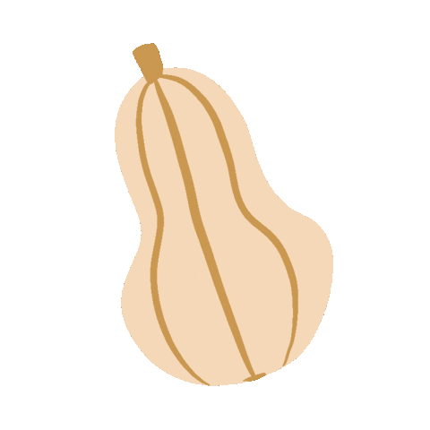

Préparation de la recette (6 personnes) :

An Si, notre cuisto n'a rien à voir avec l'Italie mais comme pas
mal de personnes, elle apprécie sa cuisine et tout ce qui s'y rapporte.
Cette recette 'comfort-food' de raviolis à la ricotta, butternut et noix, est
parfaite en automne - plus particulièrement afin de respecter le calendrier
des légumes de saison - avec la présence de courge Butternut.